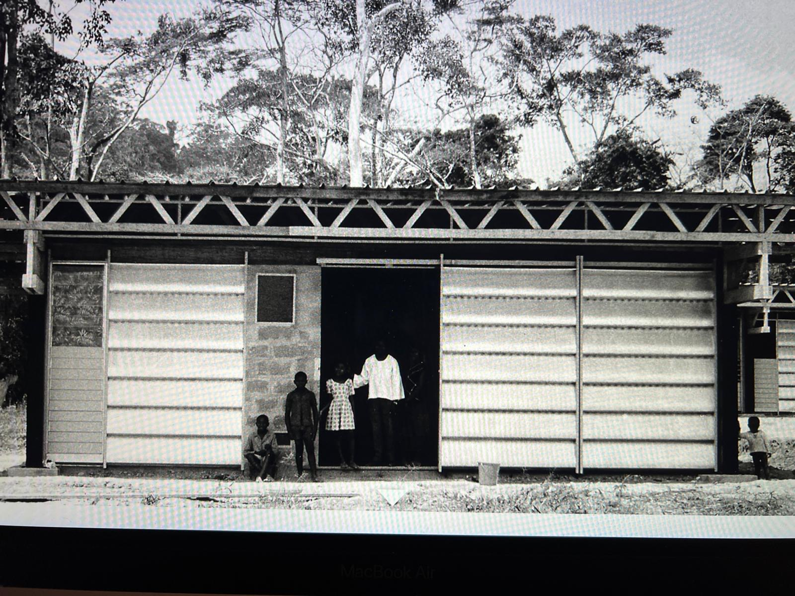
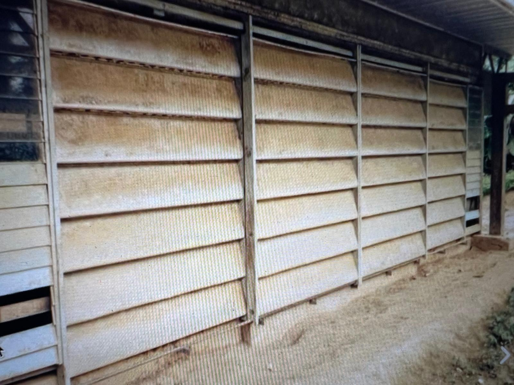
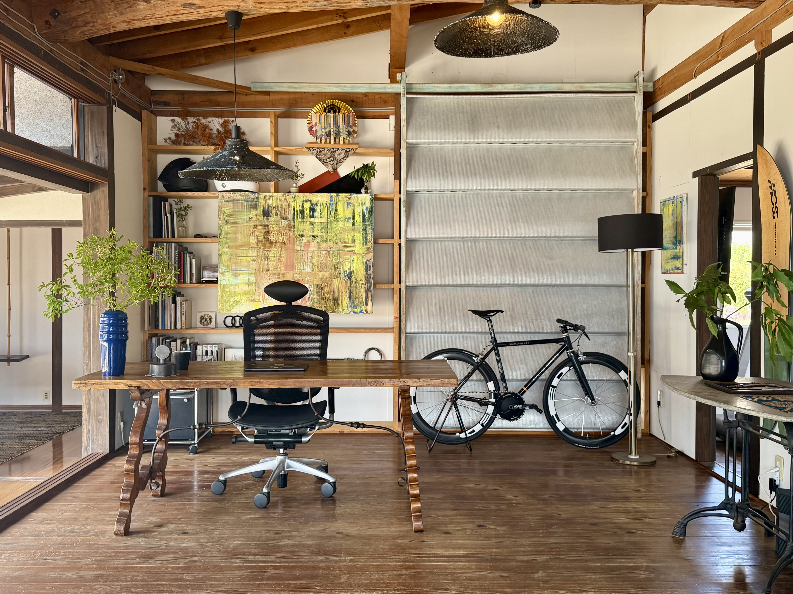
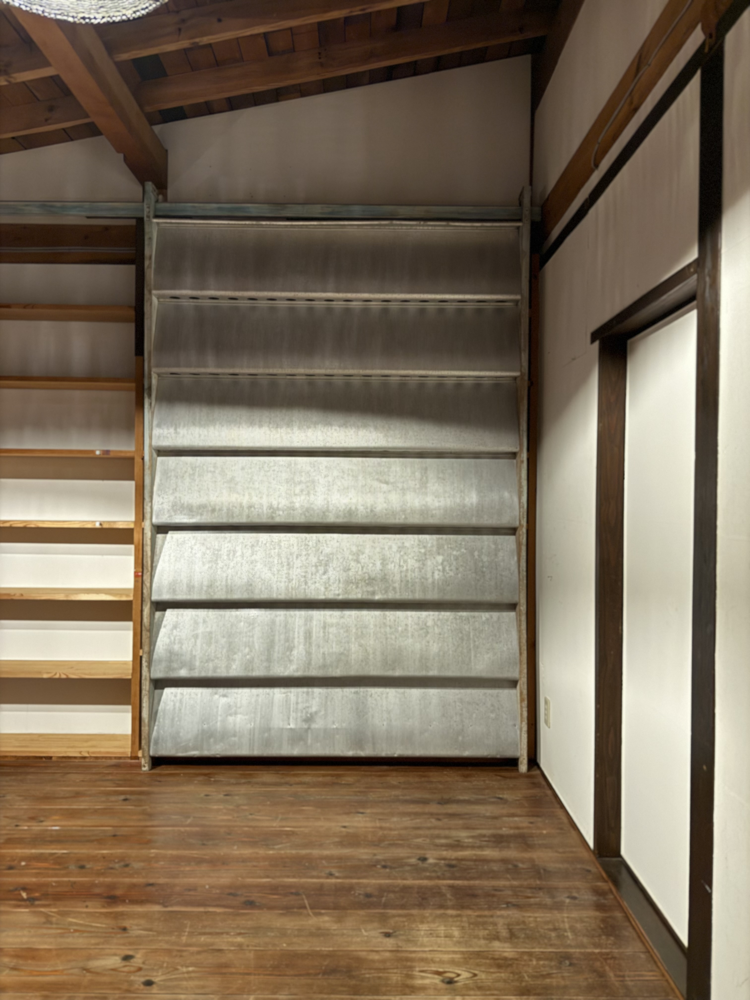

001 — UNIQUE ARCHITECTURAL OBJECT
Sun Shutter System
ARTIST
Jean Prouvé
CIRCA
1950s
ORIGIN
Cameroon
002 — PROVENANCE
"Structure is not a constraint.
It is the logic of beauty."
— Jean Prouvé
Salvaged from a primary school building in Cameroon — one of the many prefabricated structures constructed under post-war French modernist architecture programmes — this Brise-Soleil panel represents Prouvé at his most structurally honest.
Discovered and rescued by Brice Bérard (@briceberardantiques), the piece was subsequently acquired and presented by found Ltd., Okayama — the Japanese design house known for bridging raw European industrial design with the Japanese wabi-sabi aesthetic.
Prouvé's corrugated aluminium louvres, pressed from industrial sheet stock and mounted on a welded steel frame, remain intact. The patina of seven decades in equatorial light is irreversible — and irreplaceable.
— THE AXIOM —
The most valuable thing is not the object. Not the documentation. Not the price.
It is the irreducible moment of encounter — the sense of having been fully present, of having been here.
純粋経験



003 — SPECIFICATIONS
004 — OWNERSHIP CERTIFICATE
A tamper-proof digital certificate is issued with this object — recording its provenance, authenticity, and ownership history. The certificate transfers to the new owner on acquisition.
CERTIFICATE TYPE
Digital Ownership Record
Tamper-proof / Transferable
EDITION
1 of 1 — Unique
No reproductions
PROVENANCE
Documented / Verified
Cameroon → Japan
STATUS
Certificate pending
Issued on acquisition
The certificate travels with the piece. Ownership is fully transferable.
005 — THE PURE EXPERIENCE
Nishida Kitarō defined pure experience as direct, unmediated encounter — the moment before subject and object divide. Prouvé understood this without naming it: his structures were not designed to be looked at. They were designed to be lived inside.
The Brise-Soleil does not exist to be owned. It exists to be present. To cast its shadow on the floor each morning. To change the temperature of a room. To make the body aware of time without the use of a clock.
What we call ownership here is more precisely: participation. To acquire this object is to join an ongoing experience — a continuous loop of encounter, retreat, and return. The object does not transfer meaning. It opens it.
In the kuari ecosystem, the object, the space, and the stay form a single architecture of pure experience. Not a collection — a life practice. The most valuable thing you can hold is not the aluminium. It is what happens inside you each time you return to it.
007 — COLLECTOR FAQ
008 — THE LOOP
Ownership does not conclude at acquisition. It opens a loop — an ongoing, embodied relationship between the object, the space where it lives, and the life built around it. Pure Experience is not a moment. It is an architecture.
NODE 01 — THE ORIGIN
Jean Prouvé, c.1950s
The object that started everything. Seventy years of equatorial light compressed into warm amber aluminium. The encounter with this piece is the first movement of the loop.
← PURE EXPERIENCE · 純粋経験 · PURE EXPERIENCE · 純粋経験 · PURE EXPERIENCE →
006 — ACQUISITION
PRICE — ASK
To acquire this object is to enter the kuari ecosystem of pure experience. On exhibition at kuari Kaike, Yonago, Tottori. Viewing by appointment.